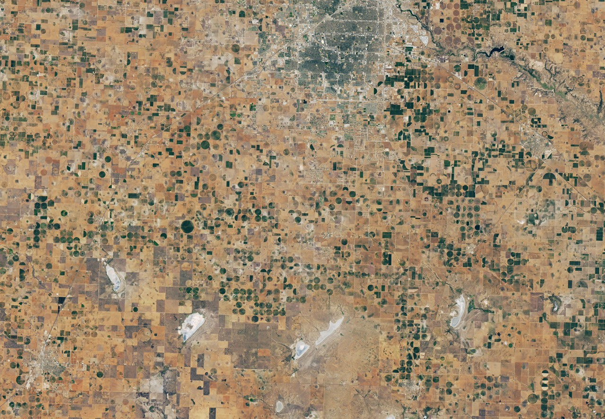

01
Seu cérebro também sente quando você para de se movimentar?
Olimpíada Todo Dia · 08/10/2026 · 11:46 (Brasília)Fonte original ↗
GZHAraghchi diz que negociação com EUA está em andamento e Irã dará resposta em 'alguns dias' InfoMoneyTítulos da França têm pior década desde 1803 e abalam mercado: o que acontece?
InfoMoneyTítulos da França têm pior década desde 1803 e abalam mercado: o que acontece? www.washingtonpost.comA China já está reivindicando território – debaixo d'águaDemócrataO Parlamento Europeu reclama normas anticorrupção mais duras sobre financiamento político e portas giratórias
www.washingtonpost.comA China já está reivindicando território – debaixo d'águaDemócrataO Parlamento Europeu reclama normas anticorrupção mais duras sobre financiamento político e portas giratórias Geopolitical MonitorBatalha a montante: a guerra civil da Etiópia gera rivalidades regionaisHiiraan OnlineEx-presidente da Somália alerta contra tomar partido em rivalidades regionaisO POVOGelo no polo norte de Marte tem menos de 3% de poeira e é muito mais limpo do que se estimava
Geopolitical MonitorBatalha a montante: a guerra civil da Etiópia gera rivalidades regionaisHiiraan OnlineEx-presidente da Somália alerta contra tomar partido em rivalidades regionaisO POVOGelo no polo norte de Marte tem menos de 3% de poeira e é muito mais limpo do que se estimava islandsbusiness.comPACNEWS SPORTS, 08 OCTOBER 2026O POVOBuraco no gelo da Antártida chegou ao tamanho de um pequeno país e expôs o oceano em pleno invernowww.timeoutdubai.comGlobal Village announces country pavilion shake up for season 31
islandsbusiness.comPACNEWS SPORTS, 08 OCTOBER 2026O POVOBuraco no gelo da Antártida chegou ao tamanho de um pequeno país e expôs o oceano em pleno invernowww.timeoutdubai.comGlobal Village announces country pavilion shake up for season 31 BBC US'Bold and inventive' Canadian poet Anne Carson wins Nobel Literature Prize
BBC US'Bold and inventive' Canadian poet Anne Carson wins Nobel Literature Prize BBC EuropeReino Unido e Alemanha enfrentarão ameaças juntos, diz Burnham em Berlim
BBC EuropeReino Unido e Alemanha enfrentarão ameaças juntos, diz Burnham em Berlim Middle East Council on Global AffairsÁsia Central numa Ordem Internacional Emergente: Mudando Parcerias Estratégicas com o CCGMail & GuardianEthiopia: Landlocked, But Not LandboundUOL NotíciasA ?era da desconversa?, praga do tempo da 2ª Guerra, ameaça Brasil de 2026
Middle East Council on Global AffairsÁsia Central numa Ordem Internacional Emergente: Mudando Parcerias Estratégicas com o CCGMail & GuardianEthiopia: Landlocked, But Not LandboundUOL NotíciasA ?era da desconversa?, praga do tempo da 2ª Guerra, ameaça Brasil de 2026 ESA NewsSentinel-3C retorna suas primeiras visualizações da TerraPacific Media NetworkFundo climático do Pacífico arrecada mais de NZ$ 336 milhões em meio a apelos por açãoThe Himalayan TimesCientistas ganham Nobel de Química por descobertas sobre moléculas espelhadas que levaram a muitos medicamentosTerraF1: FIA conclui apuração sobre falha de software no GP do Bahrein na MalásiaSBT NewsIrã analisa resposta dos EUA sobre reabertura de Ormuz
ESA NewsSentinel-3C retorna suas primeiras visualizações da TerraPacific Media NetworkFundo climático do Pacífico arrecada mais de NZ$ 336 milhões em meio a apelos por açãoThe Himalayan TimesCientistas ganham Nobel de Química por descobertas sobre moléculas espelhadas que levaram a muitos medicamentosTerraF1: FIA conclui apuração sobre falha de software no GP do Bahrein na MalásiaSBT NewsIrã analisa resposta dos EUA sobre reabertura de Ormuz NSC TotalEndrick aceita ser emprestado mais uma vez pelo Real Madrid para recuperar espaço na EuropaNSC TotalYudi Tamashiro compra casa de três andares no Japão e mostra reforma que vai incluir cinema e jacuzziThe Economic TimesA Austrália precisa lidar melhor com os testes de moagem, diz CumminsBusinessday NGUA nomeia Sifiso Falala para liderar a nova agência de notação de crédito de ÁfricaNSC TotalApós guerra por barulho na madrugada, 380 famílias de condomínio vencem Carrefour na JustiçaFlorida TodayNASA enfrenta futuro incerto enquanto a SpaceX planeja aposentar o Falcon 9, DragonThe AustralianOs carros alegóricos Minderoo da Forrests planejam forçar os gigantes da IA a pagar aos artistasOpen MagazineO Nobel da Ciência de 2026 foi atribuído a descobertas de décadas atrásUrduPoint48% das pessoas mais pobres da região vivem no Paquistão: Banco MundialUOL NotíciasTempestade Isaías se transforma em furacão a caminho dos EUACorreio do PovoRússia nega 2º contágio em caso suspeito de peste pneumônica
NSC TotalEndrick aceita ser emprestado mais uma vez pelo Real Madrid para recuperar espaço na EuropaNSC TotalYudi Tamashiro compra casa de três andares no Japão e mostra reforma que vai incluir cinema e jacuzziThe Economic TimesA Austrália precisa lidar melhor com os testes de moagem, diz CumminsBusinessday NGUA nomeia Sifiso Falala para liderar a nova agência de notação de crédito de ÁfricaNSC TotalApós guerra por barulho na madrugada, 380 famílias de condomínio vencem Carrefour na JustiçaFlorida TodayNASA enfrenta futuro incerto enquanto a SpaceX planeja aposentar o Falcon 9, DragonThe AustralianOs carros alegóricos Minderoo da Forrests planejam forçar os gigantes da IA a pagar aos artistasOpen MagazineO Nobel da Ciência de 2026 foi atribuído a descobertas de décadas atrásUrduPoint48% das pessoas mais pobres da região vivem no Paquistão: Banco MundialUOL NotíciasTempestade Isaías se transforma em furacão a caminho dos EUACorreio do PovoRússia nega 2º contágio em caso suspeito de peste pneumônicaO mundo depende desta rede de cabos no fundo do mar.
Batalha a montante: a guerra civil da Etiópia atrai rivalidades regionais Monitor Geopolítico
Neste boletim: 1. LIGA DE RUGBY — Bulikula confiante na vitória do RWLC2 feminino. LIGA DE RUGBY — “Traga a Copa do Mundo para casa”: PM Urges Toa e Fetu Samoa3. LIGA DE RUGBY — O governo doa 4 milhões de dólares a Toa e Fetu Samoa4. LIGA DE RUGBY — Por que filhos de lendas da PNG foram forçados a pular a Copa do Mundo5. LIGA DE RUGBY [...]
A Polícia Federal (PF) informou nesta quinta-feira (8) que vai instaurar inquérito policial para investigar o incêndio de grandes proporções que atingiu a Universidade Federal de Pernambuco (UFPE) , na noite dessa quarta-feira (7). Segundo a PF, o objetivo é “apurar todas as circunstâncias e causas prováveis”. Notícias relacionadas: Incêndio causa danos a prédio da Universidade Federal de Pernambuco. O reitor da instituição, Alfredo Gomes, estima que as chamas tenham causado um prejuízo de R$ 100 milhões . “Outra grande perda no laboratório foram as pesquisas. Funcionavam ali vários grupos de pesquisa, em torno de 80 dissertações e teses de d
Carson, 76 anos, é celebrado por obras que muitas vezes ultrapassam as fronteiras entre poesia, ficção e estudos.
Antes da cimeira Reino Unido-UE no próximo mês, Burnham disse estar empenhado em “ver se conseguimos aproximar o Reino Unido da Europa”.
Ásia Central numa Ordem Internacional Emergente: Mudança de Parcerias Estratégicas com o Conselho do Médio Oriente do CCG sobre Assuntos Globais
O El Niño deste ano se intensificará antes de atingir seu pico em dezembro e há quase 100% de certeza de que se estenderá até fevereiro de 2027. A informação é da Organização Meteorológica Mundial (OMM) em seu boletim climático mensal divulgado nesta quinta-feira (8), com as temperaturas da superfície do mar prestes a bater recordes. “As previsões da OMM indicam probabilidade de quase 100% de que (o El Niño) persista até fevereiro de 2027, podendo ser um dos mais fortes desde pelo menos 1950”, afirmou a secretária-geral da OMM, Celeste Saulo, em comunicado divulgado junto com o boletim. Notícias relacionadas: Painel indica que El Niño pode se

Autora de 76 anos é celebrada por obras que cruzam as fronteiras entre poesia, ficção e produção acadêmica.
Apenas duas semanas após o seu lançamento, o satélite Copernicus Sentinel-3C enviou as suas primeiras imagens e medições de dois dos seus principais instrumentos – um marco importante que confirma que o satélite está a funcionar bem e no caminho certo para monitorizar a saúde dos oceanos, da terra, da criosfera e da atmosfera da Terra.
O fundo climático do Pacífico arrecada mais de NZ$ 336 milhões em meio a apelos à ação Pacific Media Network

UA nomeia Sifiso Falala para liderar a nova agência de classificação de crédito de África Businessday NG
Paquistão fora, Bangladesh dentro: grande mudança no troféu dos campeões organizado pela Índia ABP Live English
Físico de Wisconsin, Francis Halzen, ganha Nobel por transformar um quilômetro cúbico de gelo do Pólo Sul em um detector de neutrinos Nature World News
Os fortes laços da UD com o Prêmio Nobel de Física da Universidade de Delaware
Manchetes das notícias da assembleia escolar hoje - 9 de outubro: Principais notícias nacionais, esportivas e mundiais com curadoria de você India Today
African Union launches continent’s first credit rating agency to counter what it says is bias inflating borrowing costs EL PAÍS English
Assista às últimas histórias do 9News - Temporada 2026 - A bordo de um vôo com gravidade zero durante a missão de produção de combustível 9Now
Paquistão excluído do troféu dos campeões asiáticos após recusa em jogar na Índia, Bangladesh se junta ao Zoom News

Foram relatadas vítimas no navio, identificado por uma empresa de inteligência marítima como o petroleiro e químico Acers.

Hóquei: Índia busca glória no Troféu dos Campeões Asiáticos após defesa do título dos Jogos Asiáticos Telangana Hoje
Militares dos EUA são instruídos a se preparar para uma possível retomada dos ataques ao Irã – relata The Times of Israel

A sonda Solar Orbiter, liderada pela Agência Espacial Europeia, voou através de uma torção em forma de S conhecida como “retrocesso” no campo magnético do vento solar. Ao identificar as partículas indescritíveis dentro do ziguezague, a Solar Orbiter rastreou a sua origem até à superfície do Sol e revelou mais sobre o magnetismo solar – o indisciplinado instigador de perigosas tempestades solares.
‘Moralmente repugnante’: o líder dos Verdes, David Shoebridge, criticou por querer terceirizar a defesa News24
Gelo Antártico abre uma escada para o céu Free Press Journal
Opinião | É hora da China oferecer mais do que declarações no Hormuz South China Morning Post
ACT Government, Austrália solicita indicações para o Prêmio de Inclusão de 2026 kendranewsaustralia.com.au
NASA e SpaceX têm como meta às 6h33 EDT, terça-feira, 13 de outubro, para o próximo lançamento para entregar investigações científicas, suprimentos e equipamentos, incluindo o conjunto final de painéis solares de implantação da Estação Espacial Internacional, para a estação espacial. Esta é a 35ª missão comercial de serviços de reabastecimento da SpaceX ao complexo orbital da NASA. A NASA também irá [...]
K2 bilhões prometem ao fundo climático The National | Seu número um diário!
‘Retrofit Fastest Way to…’: Especialistas em transporte marítimo sobre como tornar o transporte marítimo global verde | Primeira postagem de Sagarmanthan 2026

Durante milhares de anos, o céu noturno inspirou a humanidade, guiou exploradores e ajudou os cientistas a desvendar os mistérios do Universo. À medida que o número de satélites em órbita aumenta, a sua luz refletida e a interferência de radiofrequência tornam-se um desafio tanto para a astronomia profissional como para a simples observação das estrelas. A Agência Espacial Europeia (ESA) e o Centro para a Proteção do Céu Escuro e Silencioso da União Astronómica Internacional (IAU CPS) assinaram um acordo no Congresso Astronáutico Internacional para reforçar a cooperação e desenvolver soluções técnicas para manter o céu escuro e silencioso.
Prêmio Nobel de Química de Síntese Orgânica Assimétrica O Cientista
Egito despacha mais de 2.979 toneladas de ajuda humanitária para Gaza no 291º comboio - Guerra em Gaza - Guerra em Gaza Ahram Online

Barack Obama concedeu ao engenheiro de software da Apollo 11 a maior honraria civil da América em 2016.
Pressenza - Agência Internacional de Imprensa
Estudo de Tulane descobre que o Oceano Antártico desempenha um papel fundamental nos níveis globais de oxigênio nos oceanos Tulane University News
Outra tripulação da NASA está voltando para casa. Aqui está o que esperar de seu splashdown ABC News & Headlines – Australian Broadcasting Corporation
Os cientistas estudaram um remanescente único de uma supernova do 1181 Universe Space Tech
China nomeia Song Li para chefe da OMS enquanto agência enfrenta mudanças na saída dos EUA South China Morning Post
Grã-Bretanha e Austrália: Aliados tradicionais que precisam abraçar maior formalidade Grã-Bretanha Mundo
O chefe do exército do Sudão e presidente do Conselho de Soberania Transicional, General Abdel Fattah al-Burhan, visitou o quartel-general das Forças Armadas Sudanesas Facebook
Infraestrutura do Pacífico enfrenta crescente ameaça climática FBC News
O ganhador do Prêmio Nobel Halzen e o projeto TRIDENT da China: um salto dez vezes maior do cubo de gelo antártico às profundezas do Mar da China Meridional BigGo Finance

A Ucrânia acusou a Rússia de ter como alvo os veículos lotados na cidade de Kramatorsk, na linha de frente, para matar o maior número possível de civis.
O Conflito do Norte da Etiópia não começa nem termina no Fórum do Médio Oriente da Etiópia
APOD Science APOD APOD: 2026 8 de outubro - O… Arquivo APOD de hoje Índice de envios Pesquisar Calendário RSS Educação Sobre Discutir APOD Astronomia Imagem do dia Descubra o cosmos! Cada dia é apresentada uma imagem ou fotografia diferente do nosso fascinante universo, juntamente com uma breve explicação escrita por um astrônomo profissional. O Saturno […]
Enfermeiras migrantes 'vulneráveis' obrigadas a trabalhar gratuitamente como voluntárias enquanto aguardam vistos de empregador awaaz.co.nz

Muitos palestinos ainda vivem em cidades de tendas apertadas, com o plano dos EUA para acabar com a guerra em grande parte paralisado.

A seca e um aquífero em dificuldades foram os principais tópicos de conversa quando os cientistas da NASA visitaram agricultores nas planícies altas do Texas.
Ativista climático de Sāmoa diz aos líderes: Agora vocês têm a responsabilidade de agir pela nossa aiga, futura Pacific Media Network
Segurança regional em foco enquanto o chefe da ONU se reúne com o primeiro-ministro, CDF Balochistan Pulse
Agência de classificação de crédito africana mandatada pela UA lançada oficialmente nas Maurícias The Eastleigh Voice
Pentágono reduz contagem de mortos e feridos na guerra do Irã, gerando perguntas e indignação ABC News - Notícias de última hora, últimas notícias e vídeos
Semana Mundial do Espaço 2026 destaca uma nova era de lançamentos de foguetes Tempo.co English

A equipe jurídica da presidiária norte-americana disse em entrevista coletiva que ela agora está “consciente e falando” após sua execução fracassada.